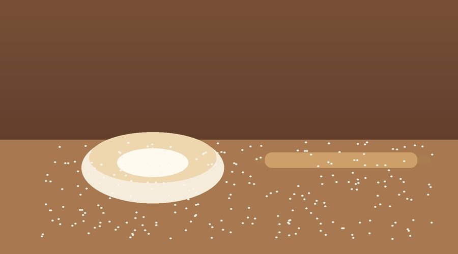

About Us
The story of Ntsiki's Artisan Bakehouse, and the people behind it.

Founded in 2023 by home baker Ntsiki Mahlangu, the bakery grew from weekend market stalls into a small shopfront supplying sourdough bread, custom celebration cakes and pastries to the local community.
To bake honest, high-quality bread and pastries by hand, using traditional methods and locally sourced ingredients.
To become the neighbourhood's trusted destination for handcrafted baked goods, while growing a small team of local employees.